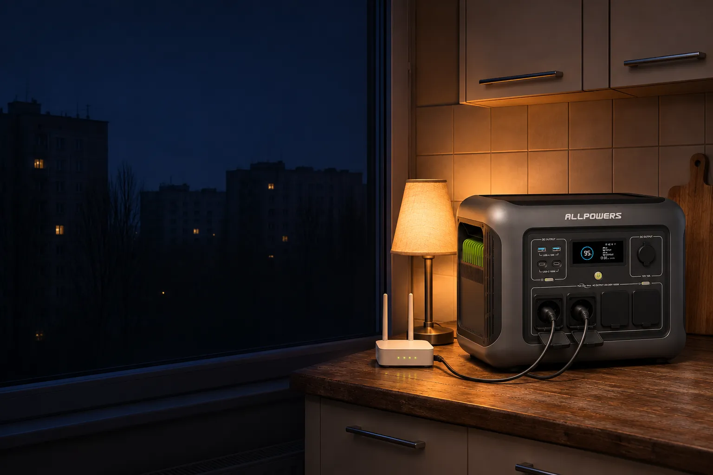
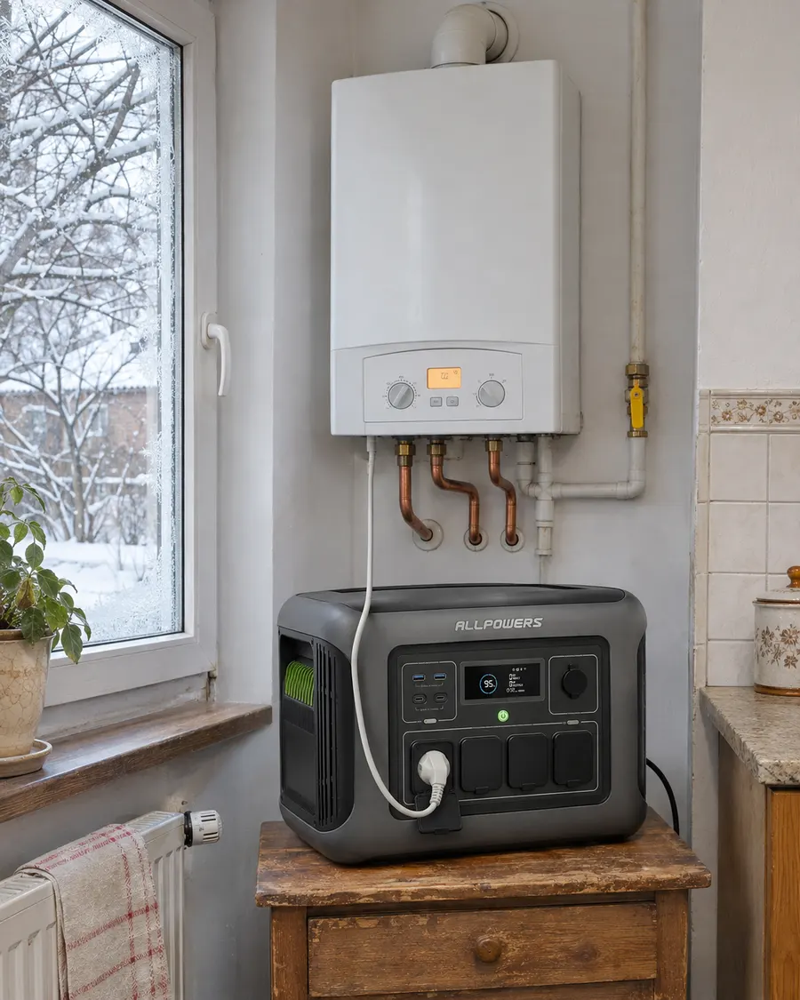
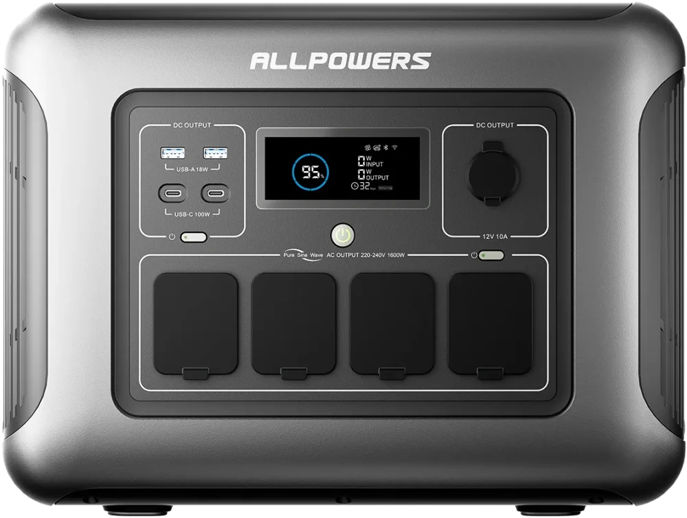
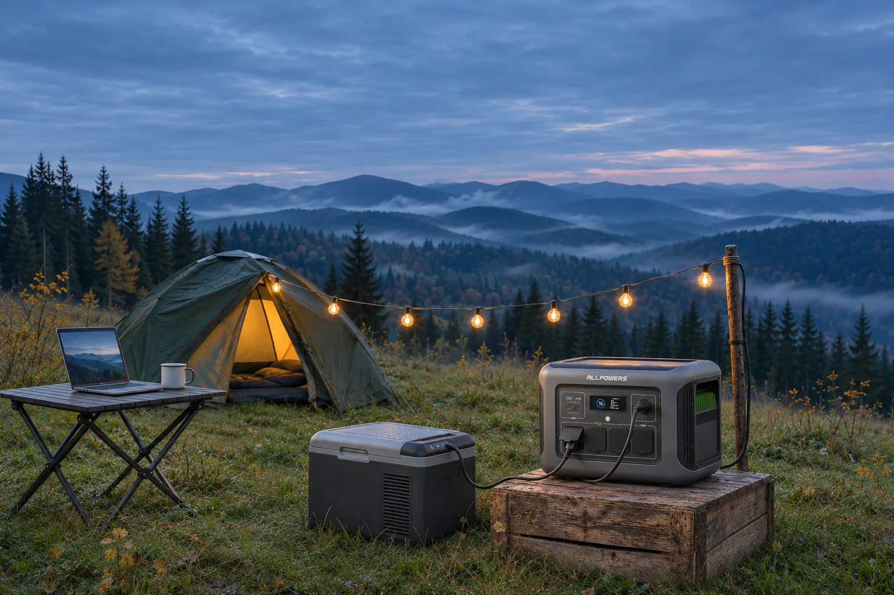
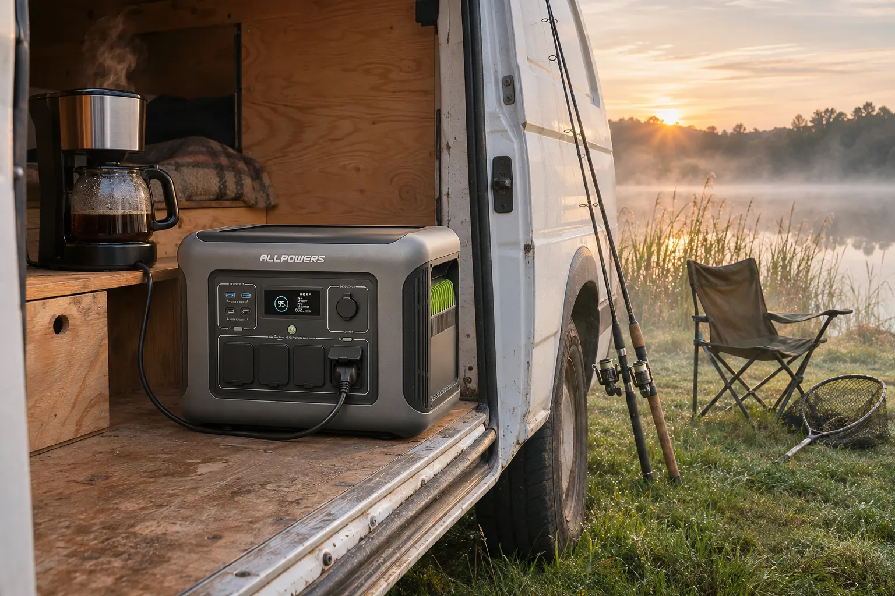
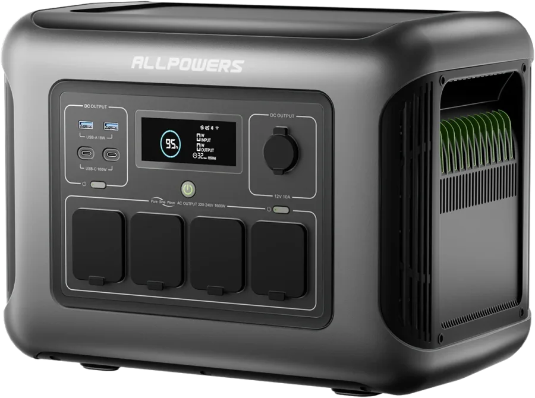

ALLPOWERS R1500 LITE, зарядна станція на 1056 Вт·год
Світло вимкнули. Роутер не помітив.
Станція перемикає техніку на батарею за 15 мілісекунд. Роутер, холодильник, котел і лампи переживають відключення, а за годину-півтори зі світлом вона знову заряджена.
Безкоштовна доставка Новою поштою зі складу в Польщі, 6-13 днів. Вилка європейська, перехідники не потрібні.
Прикладіть станцію до свого графіка
Позначте години без світла і що має працювати. Розрахунок враховує близько 15% втрат в інверторі і те, що між відключеннями станція заряджається від розетки на 1200 Вт.

15 мс. Ви навіть не встигнете моргнути
Станцію ставлять між розеткою і технікою. Поки світло є, все живиться від мережі, а батарея стоїть повною. Щойно напруга зникла, навантаження переходить на батарею за 15 мілісекунд.
- Газовий котел не зупиняється і не скидає налаштування.
- Роутер не перезавантажується, відеодзвінок не обривається.
- Більшість комп’ютерів переживають такий провал без перезавантаження.
- Холодильник продовжує морозити, ніби нічого не сталося.
Інвертор видає чисту синусоїду 230 В, це написано просто на панелі станції. Котлам і насосам з електронікою потрібна саме така.
Дев’ять виходів на передній панелі
Усе підписано на самій станції, нічого не сховано ззаду. Розетки закриваються гумовими кришками від пилу.

4 розетки 230 В під євровилку
Разом до 1600 Вт, на старті до 3200 Вт. Пікова потужність потрібна компресору холодильника, насосу чи мікрохвильовці в момент увімкнення.
2 × USB-C до 100 Вт
Ноутбук заряджається напряму, без свого блока живлення і без втрат в інверторі.
2 × USB-A, 18 Вт
Телефони, павербанки, ліхтарики, навушники.
Автогніздо 12 В, 10 А
До 120 Вт для автохолодильника, компресора для шин чи автомобільного пилососа.
Екран і застосунок
На екрані заряд у відсотках, скільки заходить і скільки виходить, скільки годин залишилось. Через Wi-Fi або Bluetooth те саме видно в застосунку ALLPOWERS, там же вибирають режим зарядки.
Заряджається, поки дають світло
Між відключеннями буває лише кілька годин зі світлом. Ось що станція встигає за чотири години, якщо почати з нуля.
Тихий режим для ночі
35 дБ, тихіше за холодильник. Можна поставити на зарядку в спальні і спати. Режим перемикається в застосунку.
Стара проводка
Швидкий режим бере з розетки до 1200 Вт. Виробник радить вмикати станцію прямо в стінну розетку, без подовжувача, а якщо проводка в будинку слабка, заряджати в стандартному чи тихому режимі.
Сонце і авто
Вхід XT60 приймає панелі 12-95 В до 13 А. Панелі, кабель XT60 і кабель для прикурювача в комплект не входять.
Розрахована на роки щоденних відключень
Усередині літій-залізо-фосфатна батарея, LiFePO4. Це та сама хімія, що стоїть у домашніх накопичувачах до сонячних станцій: не боїться частих циклів і вважається найбезпечнішою серед літієвих.
- 3500 циклів до 80% ємності. Якщо розряджати станцію щодня, це майже 10 років.
- 6500 циклів до 50% ємності.
- Захист BMS від перезаряду, глибокого розряду, перегріву, переохолодження, перевантаження і короткого замикання.
- Працює від −10 до 40 °C, заряджається від 0 до 40 °C. Узимку в неопалюваному гаражі вона віддасть енергію, а заряджати її краще в теплі.
7 грн
приблизно стільки коштує один повний цикл, якщо поділити ціну станції на 3500 циклів. Додайте кілька гривень за електрику з розетки, і кіловат-година все одно вийде дешевшою, ніж з бензинового генератора. До того ж станція не гуде під вікнами.
А на вихідних вона їде з міста


Що варто знати до замовлення
Не все, що має вилку
Межа 1600 Вт. Електрочайник на 2 кВт, бойлер чи масляний обігрівач станція не потягне і вимкне розетки, щоб захиститися. Чайник на 1500 Вт, мікрохвильовка, мультиварка, дриль працюють.
Без додаткової батареї
До R1500 LITE не можна під’єднати додатковий акумулятор, тож 1056 Вт·год назавжди. Якщо потрібно більше, дивіться на станції від 2 кВт·год.
У коробці
Станція, кабель для зарядки від розетки й інструкція. Кабель XT60 для сонячних панелей і кабель для прикурювача купуються окремо.
15 кілограмів
По боках дві глибокі ручки, переносити зручно обома руками. Але по квартирі вона переїжджає з кухні до спальні, а не ходить з вами на прогулянку.
Вентилятор
Під великим навантаженням чути вентилятор. Цифра 35 дБ стосується тихого режиму зарядки.
Доставка і мито
Склад у Польщі, Нова пошта, 6-13 днів. Посилка дорожча за 150 €, а з суми понад 150 € в Україні сплачується 10% мита і 20% ПДВ. За нинішньої ціни це приблизно 5,6 тис. грн.
Характеристики
| Ємність | 1056 Вт·год (35,2 В, 30 А·год) |
|---|---|
| Хімія | LiFePO4 |
| Ресурс | 3500 циклів до 80%, 6500 циклів до 50% |
| Захист | BMS: перезаряд, глибокий розряд, температура, перевантаження, коротке замикання |
| Розширення | Немає |
| Розетки | 4 × 220-240 В, чиста синусоїда, 1600 Вт, пік 3200 Вт |
|---|---|
| USB-C | 2 × до 100 Вт (5/9/12/15 В 3 А, 20 В 5 А) |
| USB-A | 2 × 18 Вт (5 В 3 А, 9 В 2 А, 12 В 1,5 А) |
| Автогніздо | 12 В, 10 А, 120 Вт |
| UPS | Перемикання до 15 мс |
| Розетка | 220-240 В, до 1200 Вт; режими 1200 / 1000 / 400 Вт |
|---|---|
| Сонце | XT60, 12-95 В, до 13 А, до 650 Вт, вбудований MPPT |
| Автомобіль | 12 / 24 В |
| Одночасно | Можна заряджати і користуватися |
| Розміри | 41,3 × 31,2 × 26,5 см |
|---|---|
| Вага | 15 кг |
| Зв’язок | Wi-Fi і Bluetooth, застосунок ALLPOWERS |
| Шум | 35 дБ у тихому режимі зарядки |
| Температура | Робота −10...40 °C, зарядка 0...40 °C |
| Комплект | Станція, кабель зарядки від мережі, інструкція |

ALLPOWERS R1500 LITE
1056 Вт·год, 1600 Вт, LiFePO4, UPS 15 мс, вилка європейська
25 108 грн
- Ціна для нових покупців AliExpress, одна станція в одні руки. Для інших покупців ціна може бути вищою.
- Безкоштовна доставка Новою поштою зі складу в Польщі, 6-13 днів.
- Продає ALLPOWERS Solar Energy Store: 96,7% позитивних відгуків, понад 7000 замовлень за пів року.
Ціна й наявність актуальні на 9 листопада 2026 року і можуть змінитися. Точну суму покаже сторінка замовлення.
Питання, які ставлять перед покупкою
Чи підійде вона для газового котла?
Так. Котел з циркуляційним насосом споживає 60-150 Вт, тож одного заряду вистачає на 6-15 годин безперервної роботи. Синусоїда чиста, а режим UPS перемикає котел на батарею за 15 мс, тому він не зупиняється. Котел можна тримати увімкненим у станцію постійно, як у звичайний ДБЖ.
Скільки протримає холодильник?
Сучасний холодильник у середньому бере 40-70 Вт, бо компресор працює циклами. Якщо станція живить тільки його, це 13-22 години. Пусковий кидок компресора вона витримує завдяки піковим 3200 Вт.
Її можна тримати в квартирі?
Так. Вона нічого не спалює, не пахне і не гуде, як генератор. Не ставте її впритул до батареї опалення і не закривайте вентиляційні решітки по боках.
Можна заряджати і користуватися одночасно?
Так. Коли станція увімкнена в розетку, техніка живиться від мережі, а батарея заряджається. Коли світло зникає, техніка за 15 мс переходить на батарею.
Чи буде мито?
Посилка коштує більше за 150 €. За правилами, чинними в листопаді 2026 року, з суми понад 150 € сплачується 10% мита і 20% ПДВ. За нинішньої ціни це приблизно 5,6 тис. грн. Точну суму покаже оформлення замовлення або Нова пошта при отриманні.
Чим вона відрізняється від R1500 без LITE?
У R1500 більша батарея (1152 Вт·год), 1800 Вт на виході, бездротова зарядка зверху і можна докупити додатковий акумулятор. Але вона важча (17 кг) і гучніша (45 дБ проти 35). LITE простіша, легша і тихіша.
Що буде, якщо щось піде не так з доставкою?
Покупка йде через AliExpress, тож діє захист покупця: якщо посилка не прийшла або товар не відповідає опису, можна відкрити спір і повернути гроші.